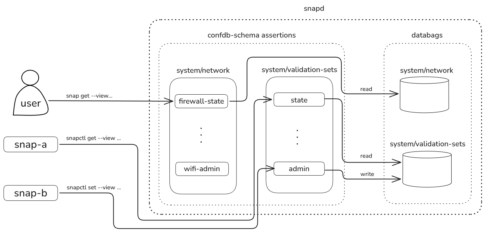

Confdb configuration mechanism¶
Confdb is an assertion-backed alternative to individual snap-specific configuration. It uses an external confdb-schema assertion to separate the configuration data from the snap installation. This allows for advanced configuration functionality, including:
device onboarding and management
cross-snap configuration
precise access control
evolving configuration settings without changing the affected snaps
See How to configure snaps with confdb for instructions on using confdb with your own snaps, and read on for specific implementation details.
Confdb is currently considered an Experimental feature and implementation details may change as development progresses.
Confdb views¶
Settings are exposed via views. Views allow for both granular access control and granular configuration contracts to enable the evolution of a configuration value.

Figure: Architectural overview, showing users and snaps interacting with separate confdb databags through granular views.The views header in the confdb-schema assertion contains sets of rules exposing a 「view」 onto the configuration space. Each view rule map a request path to a storage path.
Users and snaps can access the request path, while the storage path defines the layout in storage.
The separation of the request path from the storage path provides the isolation, allowing the configuration layout to evolve without having to propagate those changes to every accessing snap.
Confdb view requests¶
When making a request, an administrator (or a snap accessing a configuration) must specify a view. A request path is required for writes and optional for reads; if the request path is omitted on a read, the request is matched against all readable rules in the view.
A rule matches when the supplied request is equal to, or is a prefix of, the rule’s request path. The corresponding storage path is then used to retrieve a value.
All matching readable rules are evaluated. If more than one rule matches the request, the result is aggregated from all of the values.
Multiple views can have the same “request” field, but different “storage”, facilitating backwards compatibility when transitioning to a new layout.
Example implementation¶
The following is almost the simplest confdb-schema assertion that could be defined to obtain some information about installed snaps, although we omit the other headers and the body for brevity. See Configure snaps with confdb for the full details.
Basic example¶
type: confdb-schema
account-id: system
name: snaps
[...]
views:
state:
rules:
-
request: snaps.firefox.status
storage: v1.snaps.firefox.status
access: read
[...]
This above configuration could be accessed as follows:
$ snap get system/snaps/state snaps.firefox.status
enabled
We now want to expand the above example to allow status and revision queries for many different snaps.
Placeholders¶
Instead of enumerating every possible combination, we can use a placeholder to map a variable in the request path to the storage path:
[...]
rules:
-
request: snaps.{name}.status
storage: v1.snaps.{name}.status
access: read
[...]
This enables the snap name to be dynamically mapped into the query:
$ snap get system/snaps/state snaps.firefox.status
enabled
$ snap get system/snaps/state snaps.spotify.status
disabled
Nested paths¶
To add more configuration paths for snaps, either add more rules or, if possible, use a “content” shorthand to define nested paths:
[...]
state:
rules:
-
request: snaps.{name}
storage: v1.snaps.{name}
access: read
content:
- storage: status
- storage: revision
[...]
This example only provides a storage path. When omitted, the request path is assumed to be equal to the storage path by default.
Aggregate results¶
As requests are matched on prefixes of the request paths in view rules, it’s possible to provide a prefix path to `snap get` and to obtain an aggregate result:
$ snap get system/snaps/state snaps.firefox.status
enabled
$ snap get system/snaps/state snaps.spotify.revision
7
$ snap get system/snaps/state snaps
{
"firefox": {
"status": "enabled"
},
"spotify": {
"status": "disabled",
"revision": 7
}
}
Evolving configuration¶
All the rule mappings defined above preserve the same structure after adding the v1 storage prefix. As snapd maps request paths to storage paths, let’s say a user or snap is interested in knowing the system’s (in this case, snapd’s) status. To take advantage of confdb’s features for evolving configuration schemas and re-organising namespaces, we could add the following rule:
...
rules:
-
request: snaps.{name}
storage: v1.snaps.{name}
access: read
content:
- storage: status
- storage: revision
-
request: system-status
storage: v1.snaps.snapd.status
access: read
This maps an already exposed path (snaps.snapd.status) under a new request path, allowing us to query system-status directly.
In the future, if a new path was intended to provide the value for system-status, we would only need to modify the mapping.
$ snap get system/snaps/state
{
"snaps": {
"firefox": {
"status": "enabled"
},
"spotify": {
"status": "disabled",
"revision": 7
},
"snapd": {
"status": "enabled"
},
},
"system-status": "enabled"
}
Namespaces¶
If the configuration data layout changes, only the assertion needs to be modified. The snap sees the same namespace, isolating it from schema changes. For example, the following assertion exposes the same data under the same namespace (from a user or snap’s perspective) but the storage layout it assumes is completely different:
...
rules:
-
request: snaps.{name}.status
storage: v1.statuses.{name}
access: read
-
request: snaps.{name}.revision
storage: v1.revisions.{name}
access: read
-
request: system-status
storage: v1.statuses.snapd
access: read
警告
The configuration namespace should be considered carefully up front. While new confdb views can be added and existing ones can be extended, devices in the field may be running older snap versions that still depend on the existing namespace and views. Removing or renaming request paths, views, or schemas can therefore break those older snaps, making 「outdated」 namespaces difficult to retire safely.
Interface Plugs¶
Snaps can use the confdb interface to express their interest in accessing a view through the plug stanza in their snapcraft.yaml (then snap.yaml). For example, a snap wishing to access the same state view would declare it as:
plugs:
snaps-state:
interface: confdb
account: system
view: snaps/state
If the snap publisher signed the confdb assertion, the confdb interface will be auto-connected. Otherwise, the plug must be connected to the :confdb slot manually.
The snap can then refer to this interface plug when accessing confdb with the snapctl commands. It must also use the --view flag to signal this as a confdb request:
$ snapctl get --view :snaps-state snaps.firefox.status
enabled
Confdb supports the same commands and options as the original configuration mechanism. This includes unsetting data using snapctl unset --view ... or by using snapctl set --view with ! suffixed to the request path, for example snapctl set --view :snaps-state snaps.firefox.status!.
Custodians¶
The confdb interface plug can have one other attribute, role, which is optional and can only take a value of custodian.
custodian declares that the snap has a special role in managing the data accessed through the referenced view. This applies to an exact account, schema, and view combination, so a custodian for one view does not satisfy the requirement for another view in the same schema. For every non-system confdb view, at least one custodian must be installed and connected for the data to be accessible. Snaps cannot be custodians of system views, but they can still define observe-view-<plug> hooks on those views. See the Hooks section for further details.
One of the key aspects of the custodian role relates to ephemeral data which we’ll cover in the next section.
Ephemeral data¶
In the context of confdb, ephemeral data is configuration data for which the authoritative version is stored outside of snapd. Snapd may retain data, but this should only be considered a cache, while the custodians are responsible for loading and storing the authoritative version during read and write accesses.
Configuration paths are marked as ephemeral in the storage schema which is specified in the body of the confdb-schema assertion.
During snap or snapctl access (whether to read or write), changes are either committed or read as a transaction. Snapd will get data from its storage and then schedule certain hooks from snaps with plugs referring to views affected by the data.
We’ll cover hooks in more detail in the next section so for now we’ll just focus on two: save-view-<plug> and load-view-<plug>. These are invoked for custodian snaps when writing and reading, respectively, and are suffixed with the name of the interface plug for which the snap is custodian.
When snapd detects that a snap or snapctl set might impact ephemeral data, it stores the changes in a transaction object and invokes save-view-<plug> hooks for connected custodians. These hooks can then query the ongoing transaction with the usual snapctl get --view ... commands to read changes to the ephemeral data and then store them off-snapd as they wish. Snapd will also store these changes but it does so as a cache, not as an authoritative version.
When ephemeral data is read, snapd will similarly schedule load-view-<plug> hooks that give custodians an opportunity to read new data outside of snapd and then load into the transaction read with the usual snapctl set --view ... commands.
Hooks¶
Confdb supports 5 types of hooks:
load-view-<plug>query-view-<plug>change-view-<plug>save-view-<plug>observe-view-<plug>
load-view-<plug> and query-view-<plug> are scheduled during read operations, while change-view-<plug>, save-view-<plug> and observe-view-<plug> are relevant only to writes.
The load-view-<plug> and save-view-<plug> hooks are optional unless the user can access data marked as ephemeral. Accessed paths are checked at run-time against the storage schema for any ephemeral schema types along or under the path. If ephemeral data may be impacted and the appropriate hooks are not defined for at least one connected custodian then the access is rejected.
During a read of the confdb data:
snapd first reads the configuration data it stores internally and creates a transaction object to carry it.
Snapd then schedules
load-view-<plug>hooks for any custodian snaps with interface plugs for the referenced view. These hooks allow the snaps to load the ephemeral data, if they wish to.After those hooks load any off-loaded data, the
query-view-<plug>hooks run for any relevant custodian that defines them. These hooks give the custodian snaps a chance to modify the read data before it’s returned to the reader. This could be used to apply a constraint that couldn’t be enforced on write (e.g., if the data is ephemeral and could be modified off-snapd).
Both series of hooks are run in the same order, sorted by their snap’s name.
Writes to confdb data operate in a similar fashion to reads:
Snapd creates a transaction object, storing the intended changes to the confdb data.
The first hooks to be scheduled are the
change-view-<plug>hooks. These hooks provide an opportunity for custodian snaps to modify the data before it’s committed or even to reject it entirely. This is useful if the snaps must maintain complex invariants that can’t be expressed as schema types and constraints.Data modification is done with
snapctl set --viewcommand in the usual manner. To help snaps distinguish between uncommitted and pristine data, a--previousflag can be used withsnapctl get --view:$ snapctl get --view :plug-name path.modified <new_data> $ snapctl get --view --previous :plug-name path.modified <old_data>
It’s also possible to reject the change altogether while providing a reason for the rejection:
$ snapctl fail <reason>
Once all
change-view-<plug>hooks have run, thesave-view-<plug>hooks run in the same order (i.e., ordered by snap name). If asave-view-<plug>hook fails, the transaction is cancelled. The failing hook and any previously completedsave-view-<plug>hooks are invoked again with pristine data, in reverse invocation order, to help custodian snaps maintain consistency among the various versions of the configuration data. Errors from these rollback runs are ignored, and the original failure is reported.After all
save-view-<plug>hooks succeed, snapd commits the transaction and then schedulesobserve-view-<plug>hooks. This is the only type of confdb hook scheduled for non-custodian plugs, although custodian plugs can also receive it. The hook notifies snaps plugging views affected by the write that configuration data relevant to them may have changed. The snap that initiated the write does not receive its own observe hook. Errors from all observe hooks are ignored and cannot roll back the already committed transaction.